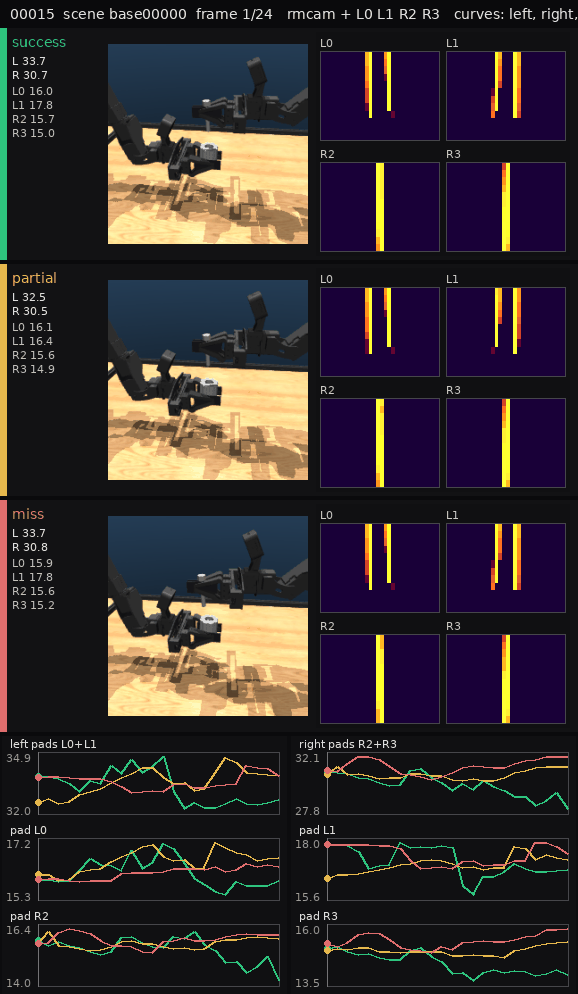
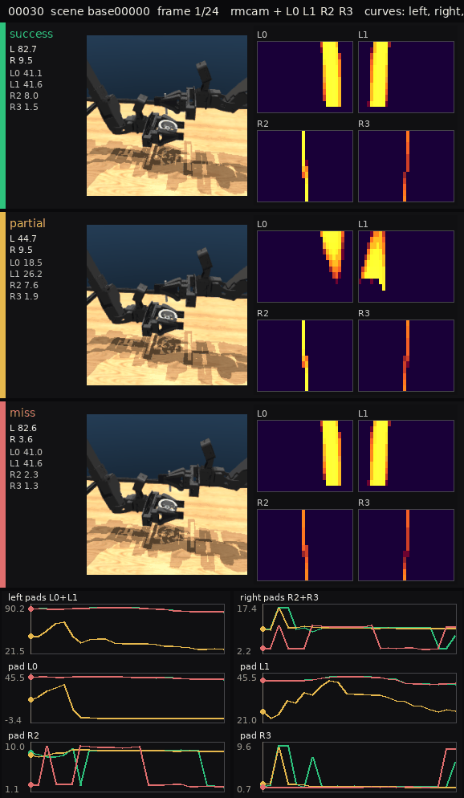
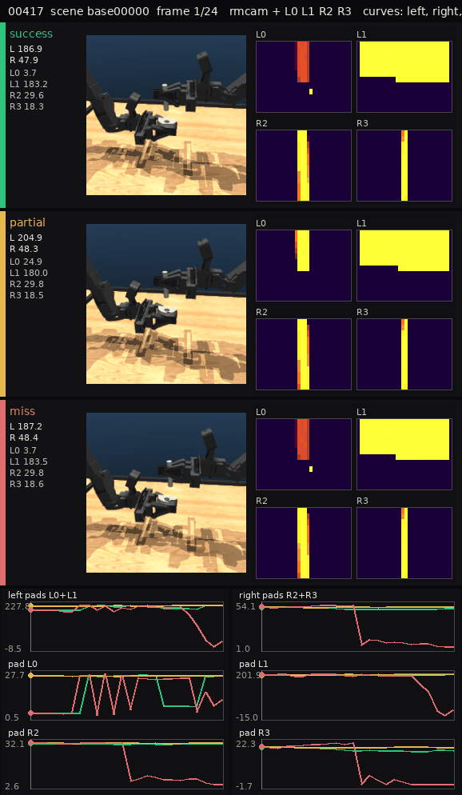
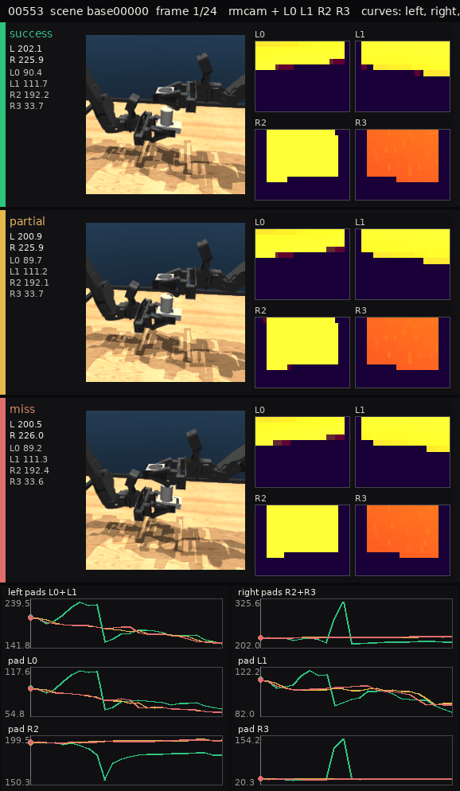

Task 00004 · scene 00000

Each GIF is one matched scene in success / partial / miss. Left is train rmcam. Right is the four pads separately (L0 L1 R2 R3), not a 4-pad sum.
Curves are left pads (L0+L1), right pads (R2+R3), and each pad. There is no 4-pad sum and no 4-pad delta. Training npz files were not rewritten.











